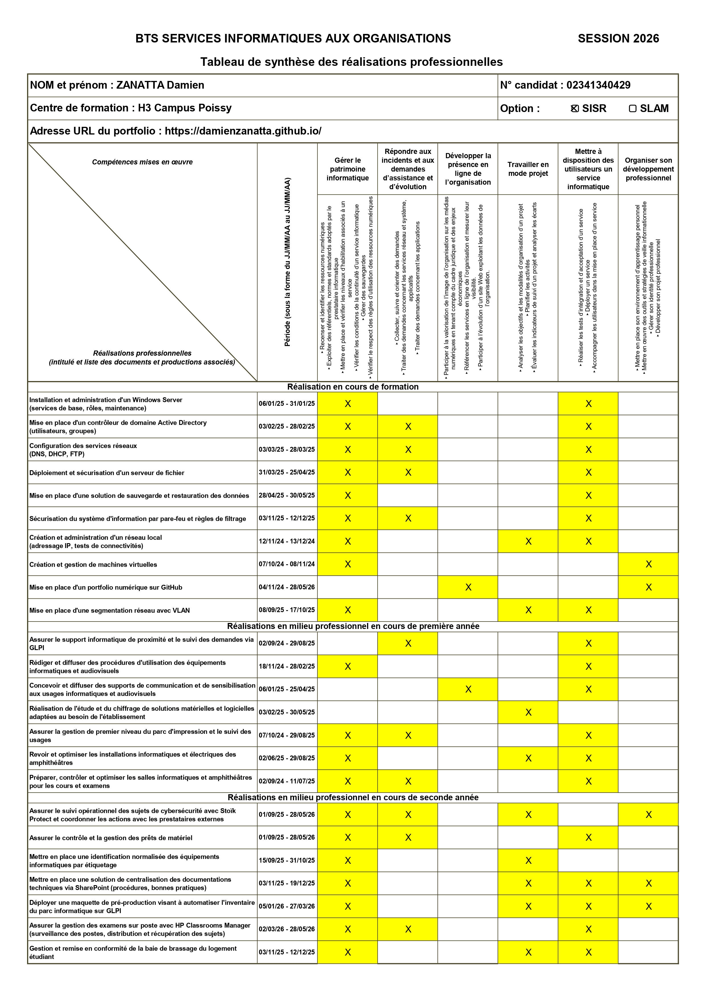
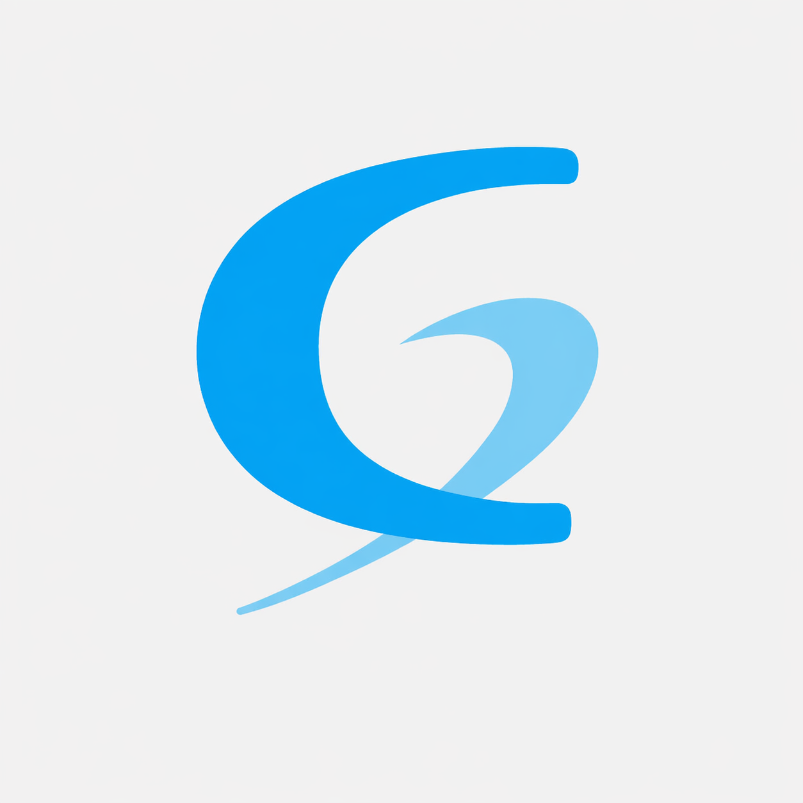
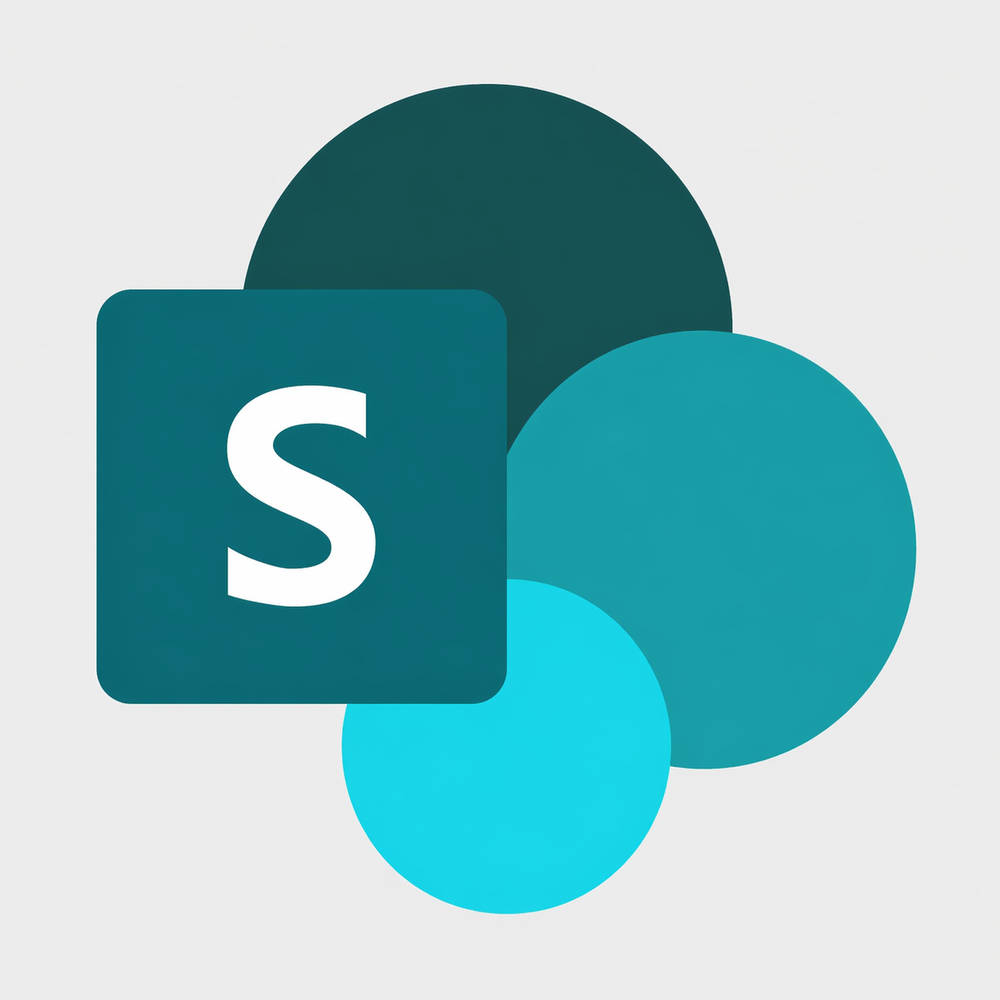
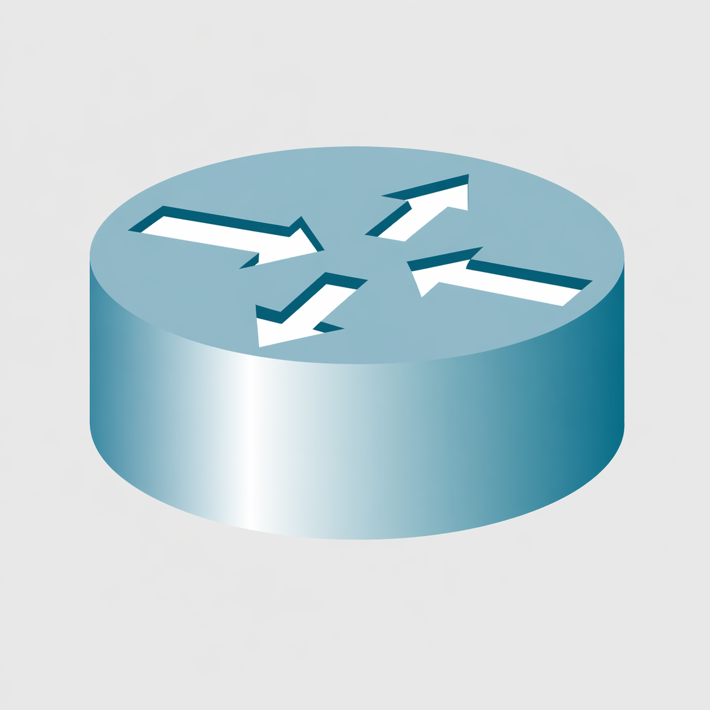
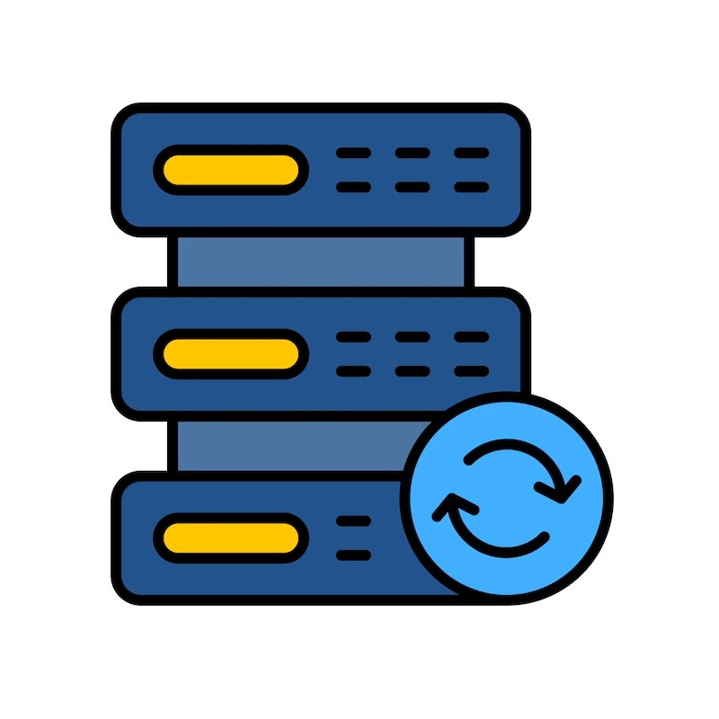

Projets
-

Automatisation de l'inventaire du parc informatique (GLPI / GPO)
-

Centralisation de la documentation informatique (SharePoint)
-

Préparation au renouvellement du matériel IT (Sourcing / Benchmark)
-
Sensibilisation des utilisateurs à l'authentification multifacteur (MFA)
-

Suivi de la campagne de simulation de phishing (Stoïk Protect)
-

Configurations initiales d'un commutateur Cisco (Packet Tracer)
-

Configuration du routage inter-VLAN (Packet Tracer)
-

Configuration du DHCPv4 (Packet Tracer)
-

Déploiement d'un environnement Active Directory (Windows Server / GPO)
-

Mise en place d'un serveur de fichiers et gestion des droits d'accès (NTFS / GPO)
-

Mise en place d'une stratégie de sauvegarde automatisée (Windows Server Backup)